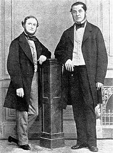

FRAUNHOFER & KIRCHHOFF
Căn buồng rộng tối om chỉ trừ một tia hẹp của ánh sáng Mặt trời chiếu qua khe thẳng đứng trên màn che cửa sổ. Ngồi cách cửa sổ bảy mét, Joseph von Fraunhofer(1) điều chỉnh một lăng kính làm bằng thủy tinh flint (thủy tinh nặng) đặt phía trước kính viễn vọng nhỏ của một máy kinh vĩ. Ánh sáng Mặt trời đi vào lăng kính, khúc xạ trong đó rồi đi vào kính viễn vọng nhỏ. Nhìn qua kính viễn vọng, Fraunhofer có thể thấy quang phổ của ánh sáng Mặt trời dưới độ phóng đại lớn.
Ông thận trọng điều chỉnh thị kính của kính viễn vọng cho tới khi quang phổ được hội tụ sắc nét. Ông hy vọng được nhìn thấy các dải màu, cũng như Newton đã làm. Đấy là những gì ông được thấy - nhưng ông cũng thấy hàng trăm vạch sẫm rất mịn chạy xuống trong quang phổ!
Bối rối, ông lau thị kính và nhìn một lần nữa, nhưng các vạch vẫn còn đó. Ông lẩm bẩm:
- Có lẽ khiếm khuyết nào đấy trong lăng kính.
Ông đứng dậy đổi lăng kính khác. Nhưng lúc quan sát lại quang phổ, ông vẫn thấy các vạch bí ẩn kia.
Cuối cùng, ông quyết định rằng các vạch là một phần của ánh sáng Mặt trời. Nhưng chúng là gì? Liệu chúng cũng xuất hiện trong các loại ánh sáng khác hay không?
Fraunhofer muốn khám phá bởi vì ông cảm thấy càng hiểu nhiều về ánh sáng thì mình sẽ chế tạo các thấu kính càng tốt hơn. Ông nổi tiếng vì các kính viễn vọng khúc xạ mà ông đã thiết kế, nhưng ông không bao giờ ngừng tìm cách chế tạo những kính viễn vọng tốt hơn. Công ty Utzschneider – Reichenbach của Áo, mà ông đang làm việc cho họ, nhận ra rằng chàng trai trẻ Fraunhofer không chỉ là một nhà kỹ thuật, mà còn là một nhà nghiên cứu. Do nghiên cứu của ông tỏ ra hữu ích đối với công ty, nên họ để ông làm thí nghiệm khi ông muốn.
Sau đó, Fraunhofer khảo sát quang phổ của ánh sáng nến. Ông ngạc nhiên vì không thấy các vạch sẫm, nhưng có hai vạch vàng sáng chói trong phần vàng của quang phổ. Điều này nghĩa là gì?
Ông chưa hiểu được điều này, nhưng ít ra ông đã khám phá được rằng không phải tất cả các loại ánh sáng đều giống nhau. Ông quyết tâm phải mô tả các vạch kỳ lạ trong ánh sáng Mặt trời. Một số vạch sẫm hơn một số khác và nổi bật như các thanh rõ ràng: một vạch trong phần đỏ, một vạch dày trong phần xanh dương, hai vạch sít nhau trong phần vàng.v.v…
Ông chợt nhớ lại các vạch sáng chói trong phần vàng của ánh sáng nến và kêu lên:
- Hai vạch trong phần vàng
Trở lại với quang phổ của ánh sáng nến, ông kiểm tra vị trí chính xác của hai vạch sáng chói. Chúng nằm cũng ngay chỗ ấy như các vạch sẫm trong phần vàng trong quang phổ của ánh sáng Mặt trời..
Không hiểu điều này nghĩa là gì, Fraunhofer ghi chép nó, rồi tiếp tục khảo sát quang phổ của ánh sáng Mặt trời. Ông quyết định lập một biểu đồ của tất cả các vạch sẫm mà ông thấy. Có tám vạch nổi bật đặc biệt, ông đánh dấu chúng bằng các chữ cái, từ A đến H. Dùng thước panme tự tạo, ông chỉ đo xem các vạch này cách nhau bao xa trong kính viễn vọng và cẩn thận vẽ chúng lên biểu đồ. Kế đến, ông vẽ tất cả các vạch mờ hơn ở giữa. Đây là công việc mất nhiều thời gian và vất vả, nhưng ông kiên trì làm hết ngày này sang ngày khác cho tới khi mắt ông đỏ ngầu và người mệt lử. Rốt cuộc, ông đã ghi ra tất cả là 574 vạch, còn nhiều vạch khác nằm quá sít nhau nên ông không đếm hết.
Bị mê hoặc bởi các vạch quang phổ bí ẩn, Fraunhofer quyết đinh nghiên cứu ánh sáng từ các hành tinh và các sao. Ông muốn biết liệu ánh sáng của chúng cũng có các vạch giống như ánh sáng Mặt trời hay không.
Để làm điều đó, ông chế tạo một kính viễn vọng khúc xạ 11,2cm và lắp phía trước nó một lăng kính. Lúc hoàn tất, ông mang chiếc kính viễn vọng đặc biệt này lên căn buồng riêng của mình, ngay khi trời tối, ông bắt đầu nhìn vào Kim tinh. Lần này, không cần màn che cửa sổ và khe hở, bởi vì trong căn buồng có rất ít ánh sáng.
 .
.
Chăm chú nhìn thật kỹ, Fraunhofer thấy ánh sáng của Kim tinh cũng có các vạch sẫm quang phổ, mặc dù chúng chỉ được nhìn thấy trong phần đỏ và phần tím của quang phổ, nói chung, chúng xuất hiện mờ nhất. Mặt khác, quang phổ này hình như giống với quang phổ mà ông đã thấy với ánh sáng Mặt trời. Đây là điều ông mong đợi, bởi lẽ Kim tinh và các hành tinh khác chiếu sáng bằng phản xạ ánh sáng Mặt trời, chứ không có ánh sáng của riêng chúng. Tuy nhiên, để kiểm tra thêm, ông đo các vị trí và các vạch chính bằng thước panme tự tạo. Hóa ra, chúng giống hệt với các vạch trong quang phổ ánh sáng Mặt trời.
Giờ đây, Fraunhofer chuyển sang một số sao. Chọn sao sáng nhất để bắt đầu, ông nhìn vào sao Sirius rồi thốt lên: “ Chỉ có ba dải sẫm!”.
Ông quan sát cho tới khi chảy nước mắt, nhưng vẫn không thấy bất cứ vạch nào. Quang phổ này hoàn toàn khác với quang phổ ánh sáng Mặt trời. Ông ghi lại: “ Một vạch trong phần xanh lục và hai vạch trong phần xanh dương”.

Nhưng các vạch này nghĩa là gì? Fraunhofer nhận ra rằng mình vấp phải một số bí ẩn của các sao. Những vạch kỳ lạ này mang một mã thông tin. Ông không đọc được mã, nhưng ông vẫn tiếp ục săn tìm các quang phổ. Ông thấy rằng sao Castor giống như sao Sirius, nhưng bốn sao khác – Pollux, Capella, Betelgeuse và Procyon – giống với sao của chúng ta, đó là Mặt trời. Trong cả bốn sao này, ông thấy chúng cũng có hai vạch D trong quang phổ ánh sáng Mặt trời.
Đấy là giới hạn mà ông đã tới được. Năm 1815, ông thông báo các kết quả cho Viện Hàn lâm Munich. Tuy nhiên, ông không tìm được cách giải thích chúng. Các mã quang phổ vẫn chưa được giải.
Người giải được các mã là Gustav Robert Kirchhoff(1), giáo sư vật lý tại Đại học Heidelberg ở Đức. Ông có tính tỉ mỉ và có phần nào ra vẻ mô phạm.
Ông nghiên cứu quang phổ không phải bắt đầu từ các vạch sẫm, mà là các vạch sáng chói. Cùng với Robert Wilhelm Bunsen, giáo sư hóa học cùng Đại học ấy, Kirchhoff đang khảo sát một hiện tượng là các nguyên tố hóa học phát ra ánh sáng khi bị nung nóng. Họ dùng một loại đèn xì đặc biệt đốt bằng khí do Bunsen sáng chế để nung nóng các hóa chất. Khi đưa một hóa chất vào ngọn lửa của đèn xì, họ thấy rằng mỗi hóa chất khác nhau nhuộm màu cho ngọn lửa bằng màu đặc biệt của riêng nó, đó là cách để nhận dạng hóa chất.
Nhìn ngọn lửa qua một lăng kính quang phổ - kính này là mẫu cải tiến từ máy kinh vĩ lắp kính viễn vọng nhỏ của Fraunhofer – hai ông phát hiện rằng mỗi màu đặc biệt tạo ra các dải ánh sáng của riêng nó, chỉ nằm trong các phần nào đó của quang phổ. Như vậy, muối ăn phát ra ánh sáng vàng chói; trong kính quang phổ, ánh sáng này thể hiện dưới dạng hai vạch sáng chói sít nhau trong phần vàng của quang phổ. Hai vạch này giống với hai vạch mà Fraunhofer đã đánh dấu là các vạch D. Muối ăn chứa natri, vây hai vạch D sáng chói là mã quang phổ của natri.
Nung nóng các hóa chất cóa chứa nguyên tố khác, hai ông cũng tìm ra mã của chúng. Một vạch đỏ sáng chói cộng với một vạch cam sáng chói nghĩa là lithi. Bari biểu lộ bằng bốn vạch sáng chói của các màu khác nhau. Đối với sắt thì có trên một ngàn vạch. Chẳng bao lâu, hai ông biết rằng khi một nguyên tố hóa học bị nung nóng đến một điểm mà tại đấy nó phát ra ánh sáng, thì ánh sáng chỉ xuất hiện trong các phần nào đó của quang phổ chứ không phải ở các phần khác. Một số nguyên tố phát ra ánh sáng ở nhiều phần, một số khác phát ra ánh sáng chỉ ở vài phần. Nhưng tất cả đều có một mẫu đặc biệt.
Một khi đã thiết lập các mẫu này, Kirchhoff bắt đầu thắc mắc về các vạch sẫm mà Fraunhofer đã phát hiện. Các vạch sẫm thì ngược lại: chúng cho biết là không có ánh sáng phát ra ở các phần của quang phổ nơi mà chúng xuất hiện. Tại sao lại như vậy?

Cách hoạt động của kính quang phổ: ánh sáng đi qua một khe hẹp và được một thấu kính chia thành hai chùm tia song song. Kế đến, ánh sáng bị khúc xạ bởi một lăng kính, lăng kính này tách các màu thành phần. Các màu được hội tụ bởi một thấu kính khác, cho ra quang phổ sắc nét. Quang phổ có thể được quan sát trên bức màn (như hình trên), hoặc qua thị kính phóng đại nó.
Để tìm cách giải đáp vấn đề này, Kirchhoff chuẩn bị một loạt thí nghiệm mới bắt đầu tiến hành vào một buổi sáng trời nắng tháng Mười năm 1859. Bước vào phòng thí nghiệm đã sẵn sang với đèn xì Bunsen và muối ăn để cho ra ánh sáng vàng chói của natri. Nhưng lần này thay vì nhìn vào natri, ông bố trí kính quang phổ sao cho có thể khảo sát ánh sáng Mặt trời từ cửa sổ sau khi nó đã đi qua ngọn lửa natri. Ngồi trên chiếc ghế đẩu, ông dự đoán: “ Mình sẽ thấy tất cả các vạch sẫm trong ánh sáng Mặt trời, ngoại trừ hai vạch D. Các vạch D này sẽ bị phủ bởi các vạch D sáng chói từ natri”.
Ông nhìn chăm chú qua kính quang phổ để biết xem dự đoán của mình có đúng hay không. Rồi ông nín thở: các vạch D sẫm không biến mất; trái lại, chúng rõ nét hơn bao giờ hết! Ông trầm ngâm nói một mình: “ Ngọn lửa natri hẳn là đã ngừng phát ra các vạch sáng chói của nó. Nó làm như vậy là do ánh sáng Mặt trời”.
Ông không thể hình dung tại sao điều này đáng lẽ phải xảy ra. Phải chăng độ sáng của ánh sáng Mặt trời có cái gì đó liên quan với nó? Để tìm giải đáp, ông thử giảm bớt lượng ánh sáng Mặt trời chiếu đến ngọn lửa natri. Khi ánh sáng Mặt trời trở nên lờ mờ, ông thấy các vạch D sẫm cũng mờ dần. Thế rồi, bất chượt hai vạch D sáng chói nổi bật lên trở lại trong quang phổ. Kirchhoff nhận xét:
- Khi ánh sáng Mặt trời đủ mờ, ngọn lửa natri phát ra ánh sáng vàng trở lại. Nhưng tại sao nó ngưng phát sáng?
Để tìm giải đáp, ông quyết đinh truyền ánh sáng trắng thuần khiết không có các vạch sẫm qua ngọn lửa. Các vạch sẫm khác trong ánh sáng Mặt trời khiến ông khó biết chính xác điều gì xảy ra với quang phổ natri.
Để có được ánh sáng trắng, ông dùng một đèn xì Drummond. Ánh sáng của đèn này bắt nguồn từ vôi được nung nóng trắng bằng khí oxy-hydro. Qua kính quang phổ, ánh sáng này cho thấy toàn bộ quang phổ của các màu; mỗi màu đều thuần khiết và không có các vạch sẫm chạy xuống dưới nó.
Giờ đây, ông xê dịch ngọn lửa natri giữa kính quang phổ và đèn xì rồi quan sát lại. Ông thấy hai vạch D đều ổn cả, nhưng chúng sẫm.
Không hiểu sao ngọn lửa ngưng ánh sáng vàng từ đèn tạo ra các vạch trong quang phổ.
Ông phấn khởi nhận ra rằng đây không phải là sự trùng hợp ngẫu nhiên. Các nguyên tử natri trong ngọn lửa đã hấp thụ ánh sáng ở đúng ngay các phần của quang phổ, nơi mà chúng thường phát ra ánh sáng. Ông nhận xét:
- Do natri chỉ hấp thụ ánh sáng ở hai vạch D, các vạch sẫm này nhận ra natri cũng tốt như các vạch sáng chói tương ứng của chúng.
Giờ đây, Kirchhoff bắt đầu kiểm tra liệu các nguyên tố hóa học khác cũng lộ ra mã giống hệt này của các vạch sẫm hay không. Ông thấy rằng trong từng trường hợp, miễn là ánh sáng phía sau đủ sáng thì chúng lộ ra. Ngày 15 tháng Mười hai 1859, ông gửi tin về phát hiện của mình cho Viện Hàn lâm Berlin.
Khi đã tiến xa trong việc giải thích ý nghĩ của các vạch sẫm quang phổ, Kirchhoff cũng bắt đầu hiểu tại sao các vạch sẫm hiện diện trong ánh sáng Mặt trời. Ông lập luận:
- Chúng hiện diện bởi vì ánh sáng Mặt trời không thuần khiết. Ở đâu đấy trên hành trình đến Trái đất, các phần của ánh sáng bị hấp thụ, để lại vạch sẫm trong quang phổ.
Nhưng cái gì có thể hấp thụ các phần của ánh sáng Mặt trời theo cách này? Lập luận từ các thí nghiệm với đèn sáng chói và ngọn lửa natri mờ dần, ông suy ra là ánh sáng Mặt trời sáng chói phải đi qua một số hơi nước mờ hơn trước khi đến Trái đất. Và do có nhiều vạch sẫm đến mức ông tin chắc rằng hơi nước này hẳn phải có rất nhiều nguyên tố hóa học khác nhau.
 .
.
Nhưng các nguyên tố này ở đâu? Chúng không có trong không gian. Sự thật vụt lóe lên trong đầu ông: chúng có trong bản thân Mặt trời. Ông thốt lên: “ Mặt trời phải là một nhà máy hóa chất khổng lồ! Bên ngoài của nó hẳn là kém sáng chói hơn bên trong, do đó bên ngoài hấp thụ ánh sáng phát ra từ bên trong”.
Kirchhoff rất hoan hỷ nhận ra rằng mình đã phát hiện một cách chính xác đáng ngạc nhiên để phân tích Mặt trời. Ngồi lặng lẽ trong phòng thí nghiệm ở Heidelberg, ông có thể thăm dò một cách tinh vi và chắc chắn vào các bí ẩn của khối khí khổng lồ đang rực cháy này cách xa khoảng 150 triệu km.
Với sự cần cù như thường lệ, ông bắt đầu công việc vất vả để nhận dạng nhiều vạch sẫm quang phổ lẫn lộn với nhau trong ánh sáng Mặt trời. Dần dần, ông lần lượt kiểm tra các vạch và phát hiện hết kim loại này sang kim loại khác: natri, sắt, magiee, canxi, crom, đồng, kẽm, bari, niken – tất cả đều có ở đấy.
Tiếp tục đi xa hơn, ông lập một họa đồ chi tiết rất đẹp về quang phổ ánh sáng Mặt trời, cẩn thận vẽ chúng ra tất cả. Ông dùng ba loại bóng mờ của bút chì để mô tả các cường độ khác nhau của vạch.
Giữa chừng của công việc chi tiết tỉ mỉ này, mắt ông phải cố gắng quá sức và trở nên quá yếu nên không thể tiếp tục. Ông giao phần còn lại cho một học trò tên là Hofman.
Khi hoàn thành, họa đồ dài gần 2,5m và trình bày 2.000 vạch riêng rẽ. Tuy nhiên, tỉ mỉ như nó vốn có, họa đồ này có lẽ chỉ kém 1/10 số vạch so với một họa đồ hiện đại được lập bằng phương pháp chụp ảnh.
Chú thích:
(1) Joseph von Fraunhofer (1787-1826). Nhà vật lý và chế tạo dụng cụ quang học người Đức. Ông nghiên cứu quang phổ của Mặt trời, các hành tinh và các sao; cải tiến kính thiên văn và các dụng cụ quang học khác giúp cho thị giác. Ông được coi là cha đẻ của thiên văn vật lý vì đã mở đầu cho ngành quang phổ thiên văn.
(2) Gustav Robert Kirchhoff ( 1824-1887). Nhà vật lý người Đức. Cùng với Bunsen, ông chế tạo kính quang phổ và giải thích các vạch Fraunhofer, dẫn tới phát hiện hai nguyên tố xesi và rubidi. Ông cũng đẻ ra các định luật Kirchhoff.